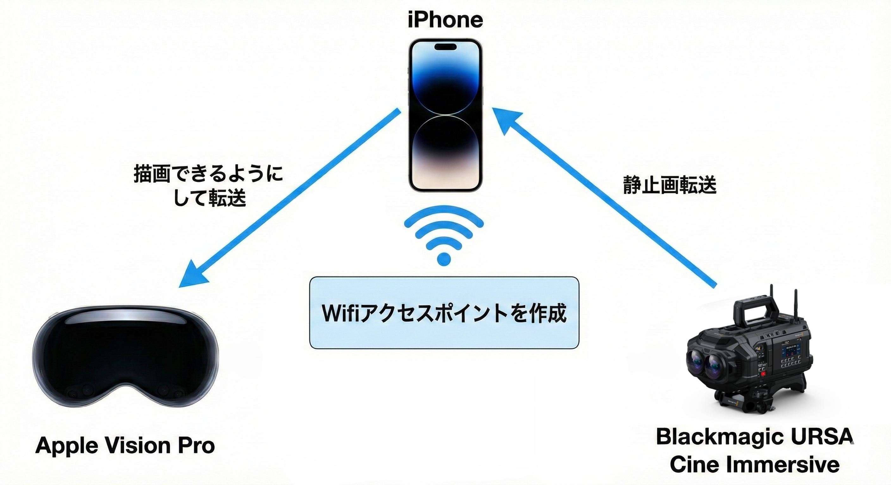
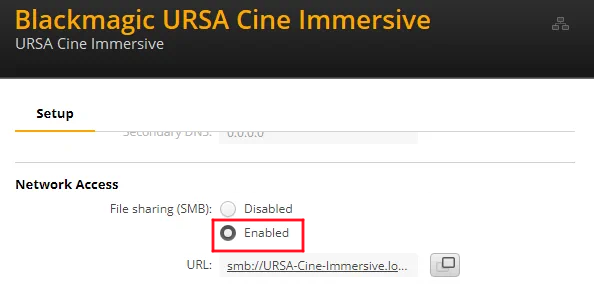
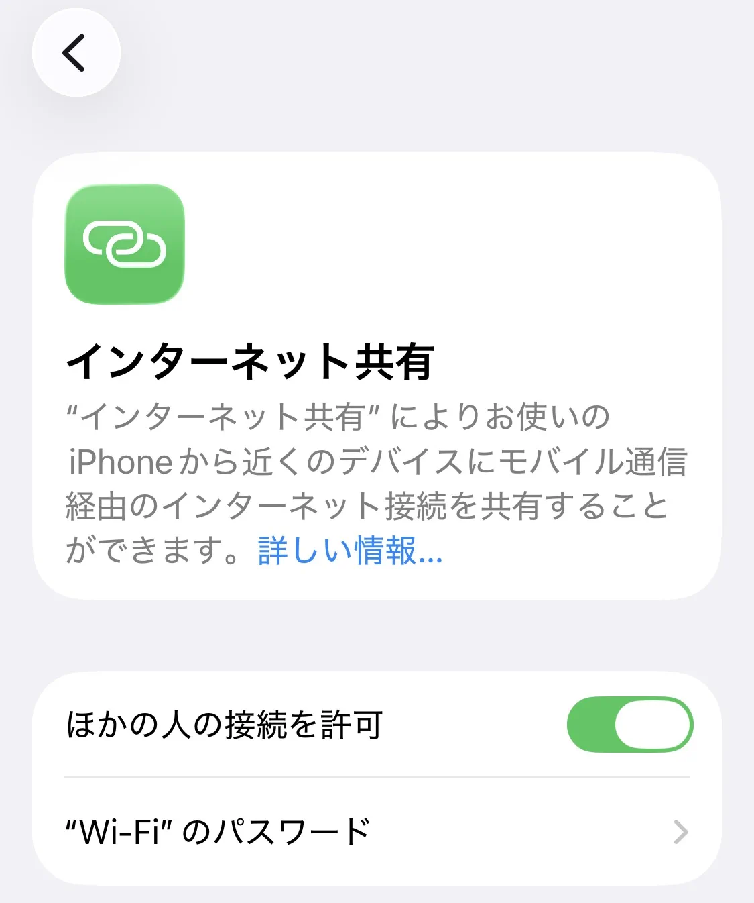
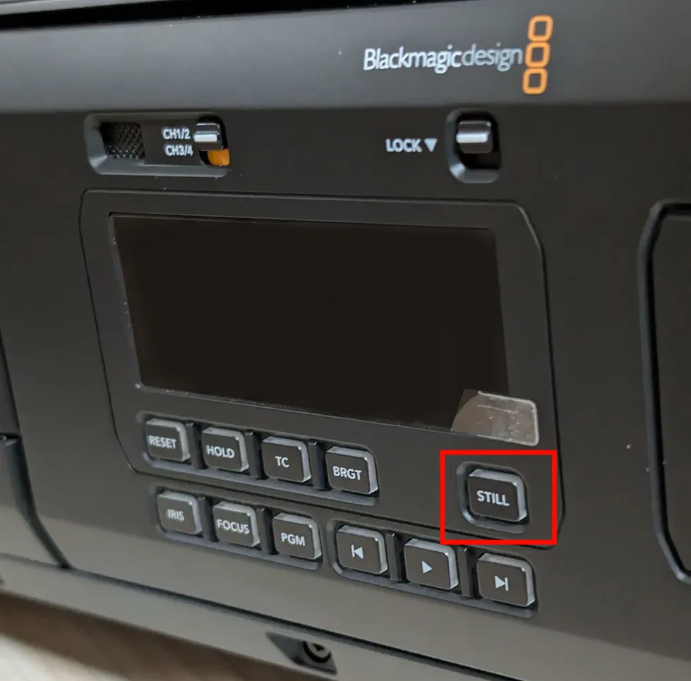
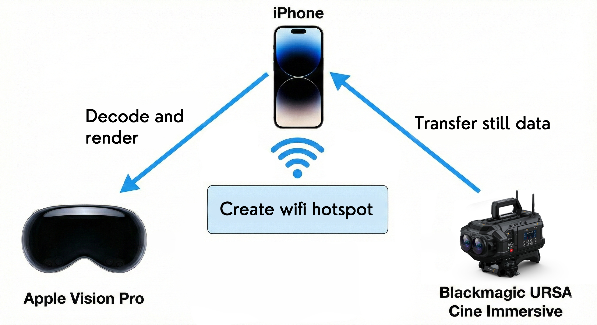
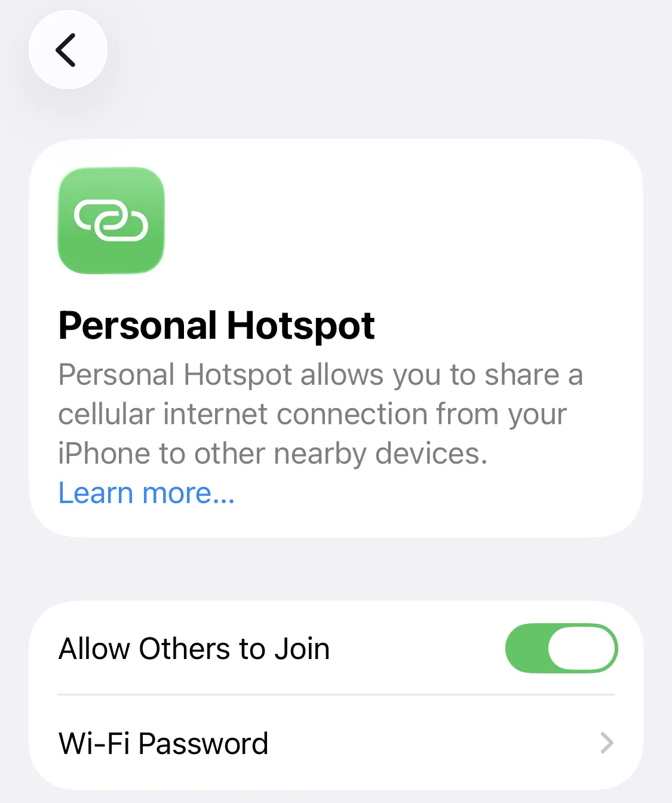

設定方法
- App StoreからiPhoneにCineServerを、Apple Vision ProにCineViewerをインストール
- PC/MacからBlackmagic CameraソフトウェアでURSA Cine ImmersiveのSMBファイル共有を有効にする

- 遅延を短くするため、URSA Cine Immersiveの画質設定を固定クオリティのQ5に変更
-
Wifi接続
-
iPhoneでWifiアクセスポイントを作成 (子機同士が通信できるWifiがある場合はスキップ可能)
- iPhoneで「設定→インターネット共有→ほかの人の接続を許可」をオンにしてパスワードを設定

- URSA Cine ImmersiveとApple Vision ProをiPhoneのWifiアクセスポイントに接続
-
URSA Cine Immersiveの左側にある"Still"ボタンで写真を撮影 (既にメディア内に写真がある場合は不要)

- iPhoneでCineServerを起動し、SMBサーバーが見つかるのを確認
- Apple Vision ProでCineViewerを起動してCineServerへ接続し、写真をプレビュー
- その後、Stillで写真を撮影すると自動でApple Vision Proへ反映
遅延
撮影ビットレートにもよりますが数秒です。情報量の多い写真だとサイズが大きくなって遅くなります。iPhoneのWifiアクセスポイントの代わりに、高速なWifiルーターを使うと少し速くなります
現場の施設のWifiなどはセキュリティ上避けて下さい。
このアプリはインターネットには写真データを送らず、Wifi経由でiPhoneとApple Vision Proのみにデータを送ります。
注意点
見える範囲はモニターのデフォルト設定の180 Fisheyeとほぼ同じです。
URSA Cine ImmersiveのWifi設定変更が不安定で、たまに画面がフリーズしますが再起動で直ります。変更さえ成功すればその後は問題を経験していません
トラブルシューティング
撮影した画像がエラーが出たりモノラル画像になった場合は固定ビットレートの18:1にして下さい。遅延は増加しますが安定しやすくなります。
連絡先
クリス (
https://x.com/christ1nu
)

Setup
- Install CineServer on iPhone and CineViewer on Apple Vision Pro through AppStore.
- On a PC or Mac, use Blackmagic Camera software to enable SMB file sharing for URSA Cine Immersive.
- To reduce latency, set image quality to Constant Quality Q5 on URSA Cine Immersive.
-
Wi-Fi Connection
-
Create a Wi-Fi hotspot on iPhone. (You can skip this if you already have a Wi-Fi network where
devices can communicate with each other.)
- On iPhone, go to Settings > Personal Hotspot (or Settings > Cellular > Personal Hotspot), turn
on Allow Others to Join, and set a Wi-Fi Password.

- Connect URSA Cine Immersive and Apple Vision Pro to the iPhone Wi-Fi hotspot.
-
Take a photo using the "Still" button on the left side of URSA Cine Immersive. (Skip this step if photos
are already stored on the media.)
- Launch CineServer on iPhone, then make sure that the SMB server is detected.
- Launch CineViewer on Apple Vision Pro, connect to CineServer, and preview photos.
- After setup, each new photo captured with Still is automatically reflected on Apple Vision Pro.
Latency
Using an iPhone hotspot usually results in 10+ seconds of delay. With a fast Wi-Fi router, delay is
typically a few seconds. Images with more detail are larger and may take longer.
For security reasons, avoid using on-site facility Wi-Fi networks.
This app does not send photo data to the internet. Data is sent only between iPhone and Apple Vision Pro
over Wi-Fi.
Notes
The visible range is almost the same as the monitor's default 180 Fisheye setting.
Changing Wi-Fi settings on URSA Cine Immersive can be unstable, and the screen may occasionally freeze, but
restarting usually resolves it. Once the change succeeds, we have not experienced issues afterward.
Troubleshooting
If captured images show errors or appear as monoscopic images, set the fixed bitrate to 18:1. Latency will
increase, but stability generally improves.
Contact
Chris (
https://x.com/christ1nu
)